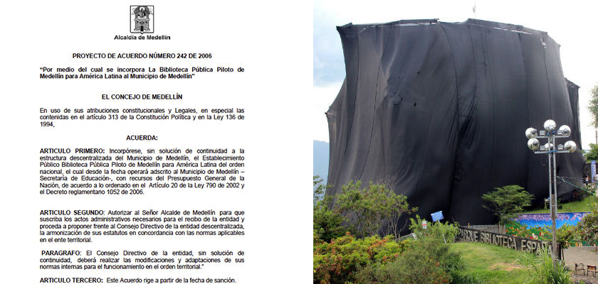
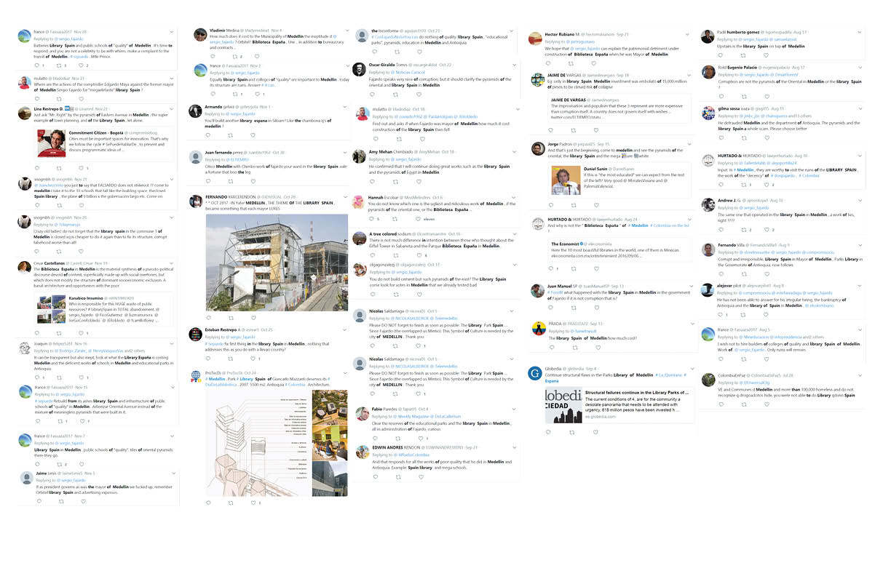
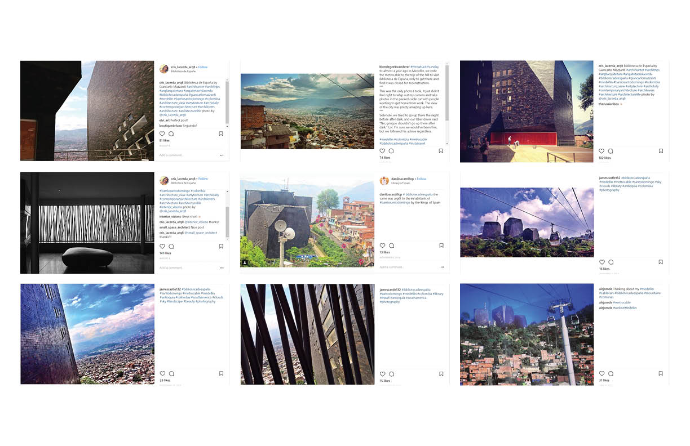

Introduction
Medellín’s recent history is one of storied proportion. The city symbolizes Colombia’s departure from decades of armed conflict, entrenched vigilantism, and neglectful government. New Colombian governments, national and municipal alike, have prioritized the construction and revitalization of infrastructure not only to improve service provision to Colombians, but to make sure these investments are visible. Beginning in 2004, Medellín began an intensive campaign of infrastructure and program development under Mayor Sergio Fajardo. Fajardo’s “social urbanism” project aimed to address issues of socioeconomic inequality in Medellín and to illustrate the municipal government’s new found commitment to the city’s most underserved and marginalized.
The Parque Biblioteca, or Library Park, system was a key component of Fajardo’s scheme of social urbanism. Suggest in the Medellín Development Plan of 2004-2007 (Plan Desarrollo 2004-2007) and written into law under Agreement 48 of 2006 (Acuerdo 48 de 2006), the Parque Biblioteca system authorized the construction of five “library parks” in Medellin’s most dangerous and neglected neighborhoods; an additional five library parks were constructed in a second phase after the success of phase 1 of the project. In addition to fulfilling the more traditional role of a typical library by providing educational and computer-based services, each library park offers leisure and social spaces for community activities as well as a variety of cultural programs.
Beyond the provision of community resources, the library parks were conceived of as instruments of socioeconomic change intended to attract people both from within the community and Medellín more broadly, thus initiating local development and improved safety. In fact, increased activity from libraries has in many cases created localized positive change proximal to the facilities.
The role of the library parks extends above that of its physical reality. The aggregate capacity of the Library Parks as an urban scale system and their aptitude for symbolic representation of the municipality's development narrative can be seen as more successful and arguably more desired than the intent of the buildings as libraries. The library parks operate as three distinct entities each at a different scale: the objects of a narrative of social urbanism, nodes in an urban system, and as community buildings. Our study is structured such that it investigates the libraries at each of these scales. This multi-scalar approach illuminates the complexity and operative simultaneity of Medellín's Parques Bibliotecas.
Narrative Map
Medellín’s Parque Biblioteca system was created as an integral component of the municipal government’s social urbanism campaign, started in the early 2000’s. Each library was conceived of by the Fajardo administration as agent of socio-economic improvement with the capacity to drive positive neighborhood change in the neighborhood it was placed. Along with other urban scale projects implemented around this time–expansions to public transportation including Metrocable, a myriad of educational and health related facilities and programs, the library parks came to form a broad narrative of Development proliferated by local government.
The narrative became a tool to sell these projects to the people of Medellín and to market the city’s campaign of social urbanism to the world. As iconic projects, the library parks quickly became symbols of Fajardo’s social urbanism and the objects of the myth of Medellin’s transformation. In Bogota and Medellin Architecture and Politics, Castro aptly chronicles the ascendance of the park libraries to their current near-mythical status. “Based on local management, and driven by a succession of independent mayors working along the margins of traditional politics, their famed improvement has seen these two cities referenced by numerous architects and city mayors around the world” (Castro 2011).
The timeline illustrates the construction of the myth of Medellin’s libraries, charting the how the narrative has been propagated and the Parque-Biblioteca projects represented by important actors involved. The timeline contains key documents–legislation, news articles, government announcements, statements from architects, each constituting a building block of the narrative. These references are filtered by who produced them in order to illuminate the agendas and sub-narratives of specific actor groups.
System Analysis
The System Network map illustrates the relationship the park libraries have with the city and their neighborhoods. Focusing on the Parque Biblioteca España, the map highlights its position in the environment of the Santo Domingo neighborhood and Comuna 1, and the context in which it operates. Designed around the time the Metrocable Santo Domingo first opened, the projects work together in activating the hilly settlement, generating new forms of social urbanism and communal bonds to revitalize the once crime-ridden neighborhood.
The area lines represent the neighborhood and the comuna from the smaller to larger scale respectively. The Parque Biblioteca España forms a series of connections to the environs based on their hosted programs (yellow lines) and destinations (circle for sports facilities, triangle for street spaces, square for schools) and the co-operations between the various libraries located within other comunas as a part of a larger system (blue lines), extending well beyond municipal borders in terms of its programmatic impact.
There have been considerable reports of positive co-relations between the libraries and quality of life in their vicinity, and has spurred a further planning of future high-impact community buildings in Medellin. As highlighted in the Medellin Library Systems strategic plan for 2014 – 2018, challenges and opportunities have been identified to reconcile how all the Library Parks were perceived initially as an ‘object’, to the impact the buildings have on their communities and motivations for future projects of a similar typology.
Case Study: Parque Biblioteca Espana
The Parque Biblioteca Espana is arguably the most iconic of all the park libraries in Medellin.It has become the de facto poster child for the Medellin of the 21st Century and Fajardo's campaign of social urbanism. In addition, Parque Biblioteca Espana in particular has become a tourist destination, attracting visitors from other parts of Colombia and abroad. The icon status of the library calls into question who the library is meant to serve: outsiders and global architecture/planning disciplines or those living in the community.
The case study consists of two parts: a building program analysis and a study of social media that involves the library. The building program analysis illustrates what resources the library offers and what target groups the library was intended to serve. The social media study display tweets and instagram posts that mention specifically the Biblioteca Espana. These posts were then filtered depending on their sentiment towards the project - yellow is the most critical, blue the most positive. This type of analysis is meant to offer a glimpse into both tourists and community member's perception of the Parque Biblioteca Espana.
{kind=link}
{kind=link}
{kind=link}


Analysis + Conclusion
Narrative Scale

{kind=link}
Medellín’s Parque Biblioteca system was created as an integral component of the municipal government’s social urbanism champaign started in the early 2000’s. Each library was conceived of by the Fajardo administration as agent of socio-economic improvement with the capacity to drive positive neighborhood change in the neighborhood it was placed. Along with other urban scale projects implemented around this time–expansions to public transportation including Metrocable, a myriad of educational and health related facilities and programs, the library parks came to form a broad narrative of Development proliferated by local government.
The narrative became a tool to sell these projects to the people of Medellín and to market the city’s campaign of social urbanism to the world. As iconic projects, the library parks quickly became symbols of Fajardo’s social urbanism and the objects of the myth of Medellin’s transformation. In Bogota and Medellin Architecture and Politics, Castro aptly chronicles the ascendance of the park libraries to their current near-mythical status. “Based on local management, and driven by a succession of independent mayors working along the margins of traditional politics, their famed improvement has seen these two cities referenced by numerous architects and city mayors around the world” (Castro 2011).
The timeline illustrates the construction of the myth of Medellin’s libraries, charting the how the narrative has been propagated and the Parque-Biblioteca projects represented by important actors involved. The timeline contains key documents–legislation, news articles, government announcements, statements from architects, each constituting a building block of the narrative. These references are filtered by who produced them in order to illuminate the agendas and sub-narratives of specific actor groups.
System Analysis Scale
The narrative behind the systems allowed us to gain an insight into the impact the libraries have had on the neighborhood despite the recent failures in the integrity of the building. In efforts to make sure the library remained operational, the recurring programs hosted within have been preserved, spread out in different buildings around the neighborhood and the old Biblioteca Granizal.
It could be argued that only in light of this failure, could the scope of functions be physically manifested in its relocations throughout the city, far exceeding the capacities of the old Biblioteca Granizal. Whether it be a mobile library travelling four times a week around Medellin, or digital literacy sessions in neighboring schools, the range of activities that endure is telling in the success of the Biblioteca as a community space despite its perceived shortcomings and mythical construct.
Library Scale
 
{kind=link}
{kind=link}
The case study of the Parque Biblioteca Espana represents the iconoism that Fajardo sought out to achieve with the Parque Biblioteca master plan. While there are distinct opinions between larger media sources and social media sources, it is interesting to analyze social media as it pertains to audience. Specifically, many of the sentiment differences between negative and positive social media posts are defined by architectural praise and the library park’s larger association with the government and finances of Medellin.